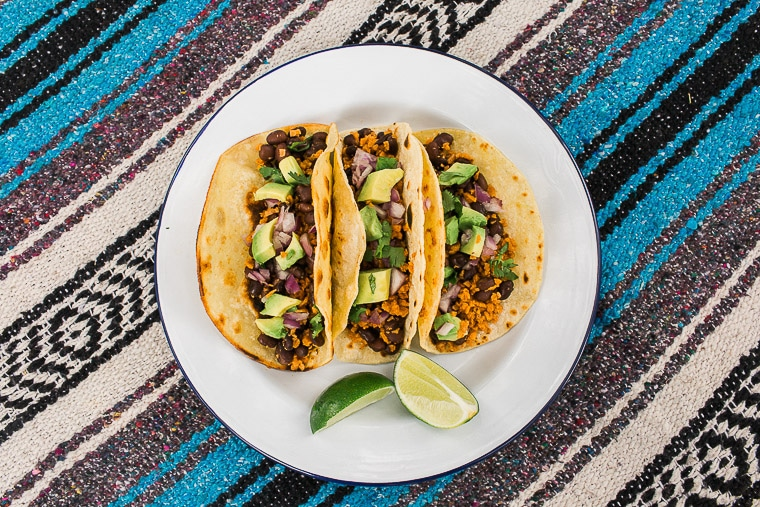

Vegan Tacos

Description
These are the EASIEST vegan tacos, perfect for camping or just a quick meal at home! With a base of simple ingredients, these can be endlessly customized to use any vegetables or toppings you have on hand.
Ingredients
- 3/4 cup water
- 1 Tbsp taco seasoning
- 1/2 Tbsp dried minced onions (or 1 tsp onion powder)
- 1 cup TVP (textured vegetable protein)
- 1 (15 oz) can black beans (drained)
- Salt to taste
- 6 corn tortillas
- Topppings: Avocado, cilantro, salsa, limes, red onions, etc., all optional
Instructions
- Bring the water, taco seasoning, and onion to a boil. Add the TVP and reduce heat to low. Allow the TVP to absorb the liquid, and then add the drained black beans.
- Cover and cook on low heat, stirring often, until the tortillas are ready – be mindful to not let the filling scorch on the bottom of the pot. Check for seasoning – add salt if needed (taco seasonings all have different salt contents so use your judgment on how much to add).
- Heat up the tortillas in a pan with some oil, on a grill, or over your stove burner.
- Remove the filling from the heat and build your tacos using your favorite toppings.